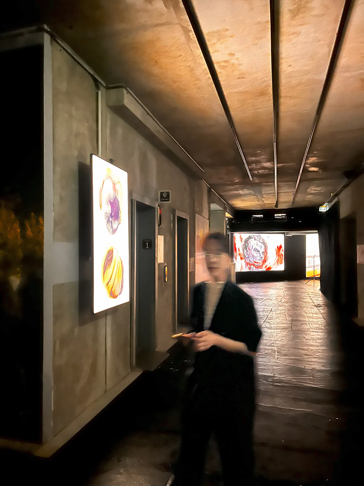
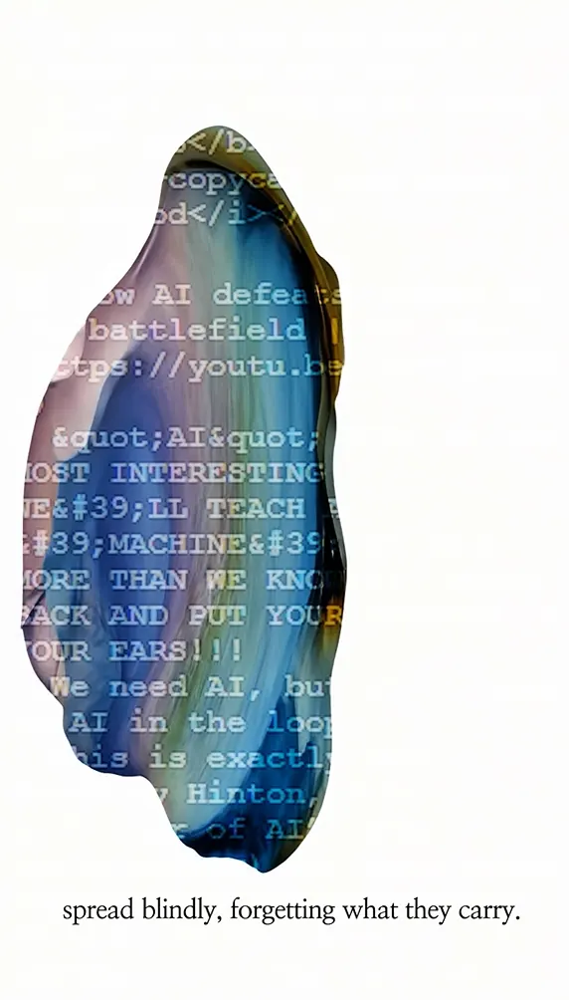
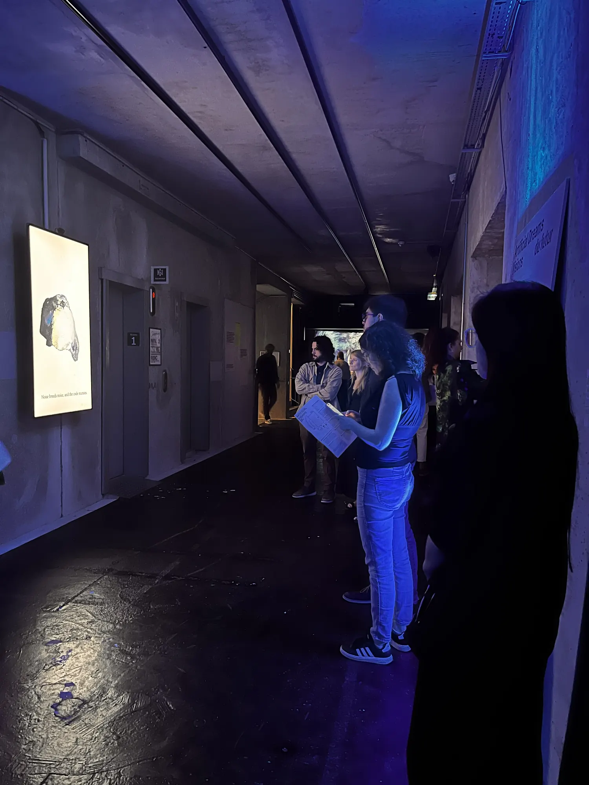
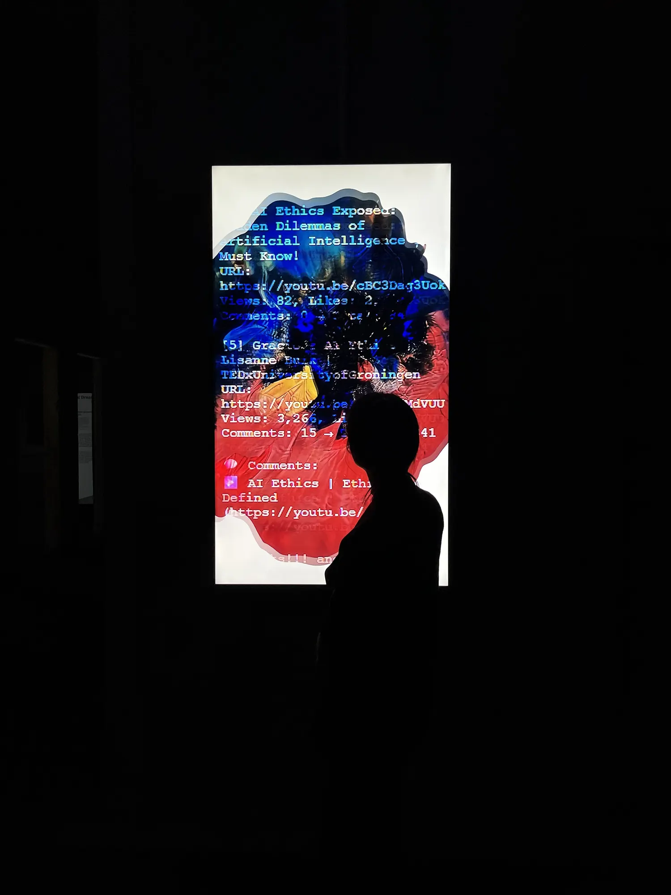

Fragments of Desire: Mutating Objects
Video art, 1080×1920, 3:03, 2025
- Shown at
- “Artificial Dreams II: Visions of the Future”, Grand Palais Immersif, Paris, 2025.06
- Materials
- Single-channel video, AI-generated music, dance performance

Fragments of Desire: Mutating Objects is a video art piece exploring the evolution of desire within digital networks. By synthesising stamp art imagery—generated through a proprietary AI model—with metadata harvested from YouTube, the work presents mutating visual forms that rhythmically traverse the boundary between organic memory and machine logic.
In this work, mutated viral fragments born of generative algorithms transform evolving digital traces into fluid, quasi-biological structures. The continuous reconstruction of imagery, interspersed with fragments of text, visualises how desire fragments and evolves amidst the landscapes of late capitalism and posthumanism.
Conceived in 2025—at a time of soaring AI stocks and a burgeoning sense of diminished human agency—this video work pairs AI-generated music with an immersive dance performance. It poses an intuitive inquiry into desire: a contagious, ever-shifting force existing between the bodily and the coded, a power that ultimately transcends the scale of the individual.


